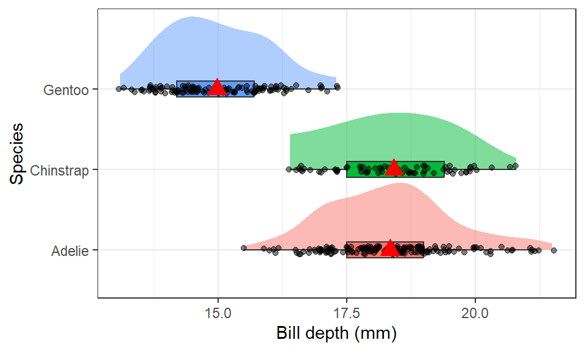

library(ggplot2); library(dplyr); library(knitr); library(ggdist)
library(scales); library(gridExtra); library(sjPlot); library(gtsummary)
knitr::opts_chunk$set(echo = TRUE, warning=FALSE, message=FALSE)HW 05: Describing Relationships
Exploring Associations between two variables
Purpose
To fully explore the relationship between two variables both summary statistics and visualizations are important.
Instructions
For this assignment you will describe the relationship between these four specific combinations of data types:
- Categorical response and categorical explanatory variable. (C ~ C)
- Quantitative response and categorical explanatory variable. (Q ~ C)
- Any combination of the above with a binary variable (B ~ C, C ~ B, or Q ~ B)
- Quantitative response and quantitative explanatory variable. (Q ~ Q)
Before you start,
- Determine what variables you want to graph based on your research topic.
- You will need a mixture of categorical and quantitative variables for this assignment.
- You should use variables that are relevant to your research topic.
- If you have not yet identified both a quantitative (Q), a binary (B), and a categorical (C) variable that you are interested in, now is the time to go back to the codebook and figure this out.
- Recode variables as needed.
- If your response variable is categorical with many levels, you may want to collapse it down to fewer than 5 levels.
If you do not already have a binary (B) variable in your clean data you can either a) go back and edit your dm file to include a binary varible, or b) dichotomize one of your categorical (C) varibles into two levels. (Make a new variable, don’t overwrite your categorical variable).
For each bivariate relationship under consideration you will do the following:
Name and explain the two variables under consideration.
Create the appropriate graphic for bivariate relationship under consideration. For these plots binary variables are treated as categorical variables with only 2 levels.
- C ~ C: Side by side barplot
- Q ~ C: Paneled histogram with density overlaid, or a grouped boxplot with overlaid violin plot.
- Q ~ Q: Scatterplot. Add both lowess and linear trend lines.
Calculate appropriate grouped summary statistics
- For continuous outcomes you’ll want to describe measures including the sample size, mean, median, range and variance for each level of the categorical variable.
- For categorical outcomes you’ll want to calculate %’s of your outcome measurement across levels of your covariate.
- i.e. proportion of males who are smokers compared to proportion of females who are smokers
- or proportion of smokers who are male, compared to proportion of non-smokers who are male.
Explain the relationship or trends you see in the data in a summary paragraph. Put this paragraph below the graphic.
- Use summary statistics in your text explanation.
- Use specific features of the graphic in your text explanation.
- i.e. are there outliers only in one group?
- Do the data seem clumped or clustered in one region of the scatterplot?
- Is there a linear or non-linear pattern?
- Does one combination of categorical levels (C~C) seem to hold most the data?
- Are there any outlying data points? Don’t list off each one, just state if there is and where approximately it’s at.
Submission instructions
- Use the template provided: [QMD]
- Right click and ‘save as’, put this in your
scriptsfolder
- Right click and ‘save as’, put this in your
- Upload your final PDF to Canvas by the due date.
Example
In these examples I use a combination of ggplot2 and sjPlot for plotting, dplyr for data management and to create summary statistics, knitr to create nice tables, gridExtra to put plots side by side. You do not need to report this information in your assignment. This is for your knowledge only. I also explain what I’m doing in code here for you to learn. you do not need to explain your own code.
C ~ C Association
For this example I am using the NC Births data set, data on 1000 births in 2004 from North Carolina. This example explores the association between the smoking status of the mother (habit) and whether or not the baby was born prematurely (premie). I specifically want to compare the percent of premie babies within the smoking and non-smoking groups.
| Characteristic | nonsmoker, N = 8731 | smoker, N = 1261 |
|---|---|---|
| premie | ||
| full term | 739 (85%) | 107 (85%) |
| premie | 133 (15%) | 19 (15%) |
| Unknown | 1 | 0 |
| 1 n (%) | ||

Contrary to what I was expecting, there is equal proportion of prematurely born babies to non-smokers (133/873, 15%) compared to babies born to smokers (19/126, 15%). There is no association between the smoking status of the mother and the likelihood of the baby being born prematurely.
Q ~ C Association
This example explores the association between the depth of a penguins bill and the species of the penguin. The quantitative response variable is bill depth in mm (bill_depth_mm) and the categorical explanatory variable is species (species).
pen <- palmerpenguins::penguins
pen %>% group_by(species) %>%
summarize(n=n(),
mean = mean(bill_depth_mm, na.rm = TRUE),
median = median(bill_depth_mm, na.rm = TRUE),
sd = sd(bill_depth_mm, na.rm = TRUE),
IQR = IQR(bill_depth_mm, na.rm = TRUE))# A tibble: 3 × 6
species n mean median sd IQR
<fct> <int> <dbl> <dbl> <dbl> <dbl>
1 Adelie 152 18.3 18.4 1.22 1.5
2 Chinstrap 68 18.4 18.4 1.14 1.90
3 Gentoo 124 15.0 15 0.981 1.5 ggplot(pen, aes(x=bill_depth_mm, y=species, fill=species)) +
stat_slab(alpha=.5, justification = 0) +
geom_boxplot(width = .2, outlier.shape = NA) +
geom_jitter(alpha = 0.5, height = 0.05) +
stat_summary(fun="mean", geom="point", col="red", size=4, pch=17) +
theme_bw() +
labs(x="Bill depth (mm)", y = "Species") +
theme(legend.position = "none")
The distribution of bill depth are fairly normal for each species, with some higher end values causing a slight right skew for Adelie and Gentoo. Gentoo penguins have lower average bill depth compared to Adelie or Chinstrap (15.0mm vs 18.3 and 18.4mm respectively). Chinstrap however have a larger IQR at 1.9 compared to 1.5 for the others.
Q ~ Q Association
This example explores the association between the length of a penguins flipper and it’s body mass. The quantitative response variable is body mass(body_mass_g) and the quantitative explanatory variable is flipper length (flipper_length_mm).
cor(pen$flipper_length_mm, pen$body_mass_g,
use="pairwise.complete.obs") # calculate the correlation[1] 0.8712018ggplot(pen, aes(x=flipper_length_mm, y=body_mass_g)) + geom_point() +
geom_smooth(se=FALSE, col="brown") + geom_smooth(se=FALSE, method="lm") +
theme_bw()
There is a positive association between flipper length and body mass of a penguin. The correlation coefficient is 0.87, and the form of the relationship is relatively linear.